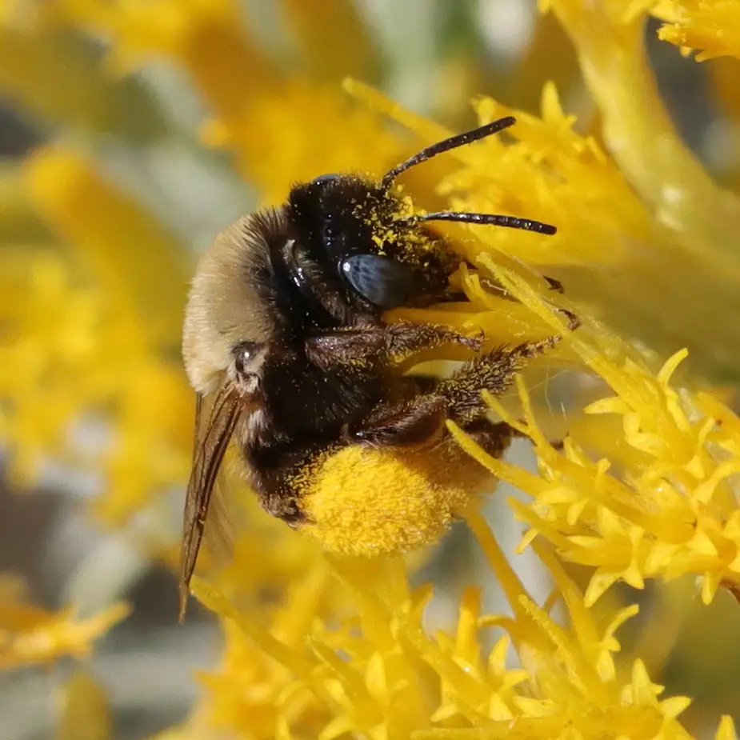

Melissodes agilis F
Melissodes scotti

Melissodes dagosus M - dorsal view
Melissodes dagosus M - face
Melissodes dagosus M - lateral veiw

Melissodes ablusus M

Melissodes ablusus F

Melissodes apicatus F
© 2025 Paula Sharp
© 2025 Paula Sharp

Melissodes apicatus M
© 2025 Paula Sharp
© 2025 Paula Sharp

Melissodes bicoloratus F

Melissodes bidentis F - face

Melissodes bidentis F - lateral veiw

Melissodes bidentis F - dorsal veiw

Melissodes floris M - face

Melissodes floris M - lateral veiw

Melissodes floris M - dorsal veiw

Melissodes agilis F - face
Melissodes agilis F - dorsal veiw

Melissodes agilis M - face
Melissodes agilis M - dorsal veiw

Melissodes agilis M - lateral veiw

Melissodes agilis M - face

Melissodes bimaculatus M - dorsal veiw

Melissodes bimaculatus M - dorsal veiw
Melissodes bimaculatus F - lateral veiw
Melissodes bruneri F - dorsal veiw

Melissodes bruneri F - lateral veiw

Melissodes bruneri F - face
Melissodes bimatris F - face
Melissodes bimatris F - face

Melissodes bimatris F - dorsal veiw
Melissodes bimatris F - metasomal veiw

Melissodes bimatris F - lateral veiw